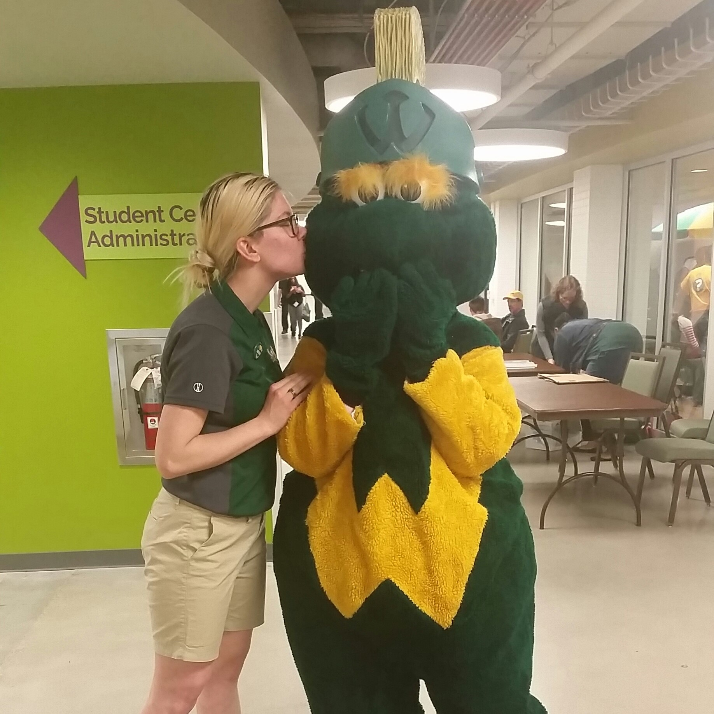

I graduated from Wayne State University in May 2017 with a BA in Psychology and a Minor in Art. I am currently a student in the MSIM program with a concentration in User Experience. I enjoy cooking and doing yoga in my spare time. Antoher project I'm involved with is being a Research Assistant to the Department of Psychology. Please see my portfolio for more information!
I began modeling when I was 19 as a way to discover who I am, how I want to see myself, and how others see me at my most vulnerable. Working with institutions like the College for Creative Studies, the Birmingham Bloomfield Art Center, Wayne State University, the Scarab Club, sketch clubs, and private artists. Classes/Artists I've modeled for: CCS - Introduction to Anatomy, Illustration Basics, Pre-College Intro to Anatomy Wayne State University - Anatomy, Figure Drawing Intermediate to Advanced Scarab Club - Open Sketch Sessions (Thursdays, Saturdays and Sundays)
Education
Wayne State University | 2019 - Present
School of Information Science, Information Management (MSIM expected Fall 2020)
BA in Psychology, Minor in Art, May 2017
GPA: 3.4

Macomb Community College
Associate's in General Studies, August 2015
Oakland University
2012-2014 | Psychology major, Psi Chi member, Active in psychology research (see below)
Professional Experience:
Wayne State University
Office Services Clerk Senior, Career Services | February 2019 – Present, Detroit, MI
In my current position at WSU, I proudly support the Student Employment, Federal Work-Student, Part-Time, and Internship programming of Career Services.
I'm excited to help re-vamp the Career Services web page including adding more engaging videos, updating the Student Employment Handbook,
and improving the usefulness of the Student Employment page.
Check careerservices.wayne.edu often for the updates!
Transfer Ambassador, Transfer Student Success Center | May 2017 - July 2018
Resolution Specialist, Rock Connections | July 2018 - Jan 2019, Detroit, MI
• Maintained client’s professional image in a high-volume contact center with a strong focus on confidentiality and thoroughly assisting clients; maintained
a 96% average score for presentation and knowledge on calls
• Researched and provided solutions for members, update and code accounts accurately
• Navigated library of resources including digital databases, printed directories, and self-assembled guides
Please see "Research Experiece" below
Wayne State University:
Post-Bac Research Assistant | Aug 2017 - Present, Detroit, MI
Department of Psychology | Concepts and Cognition Lab- Behavioral and Cognitive Neuroscience under Lara Jones Ph D
•Researched, collaborated to create survey using Qualtrics for new research regarding emoji use and individual differences.
Jones, L. L., Wurm, L. H., Norville, G. A., & Mullins, K. L. (under review). Sex differences in facial emoji use, familiarity, and valence. Computers in Human Behavior.
Manuscript submitted for publication on July 8, 2019.
Currently assisting with a literature search for the second part of our study, evaluating sartphone addiction and proneness to impulsivity.
Oakland University
Research Assistant | September 2013 - May 2014
• Conducted data entry, acted as a confederate for Social/Personality study under Virgil Zeigler-Hill Ph D.